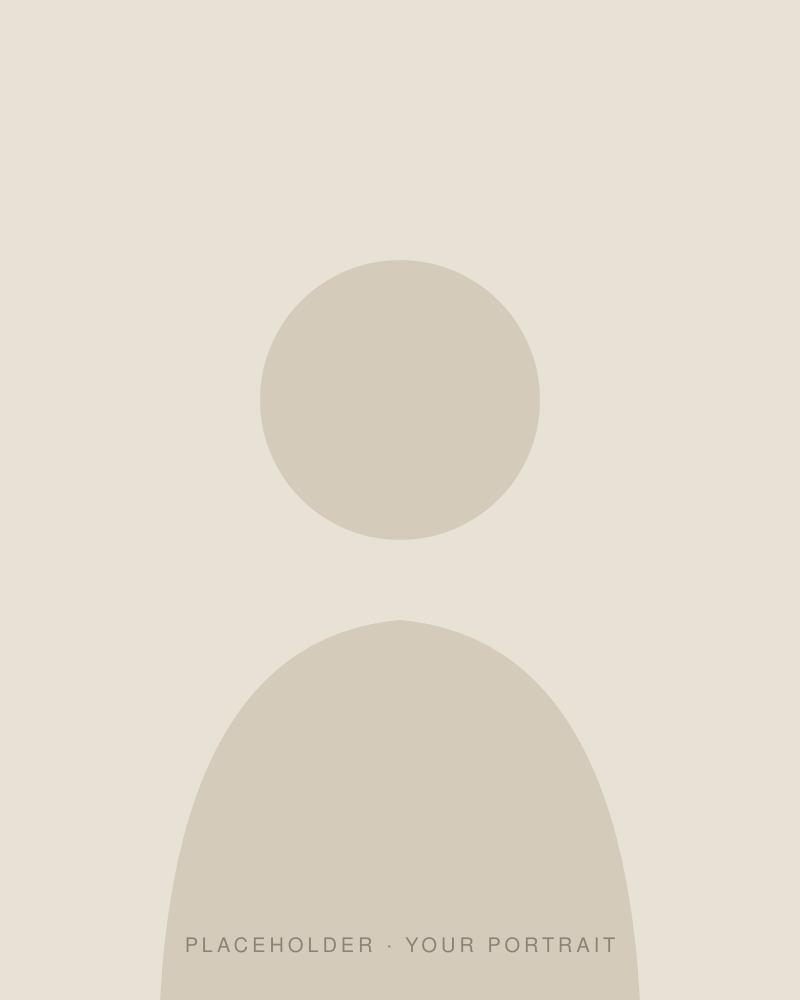
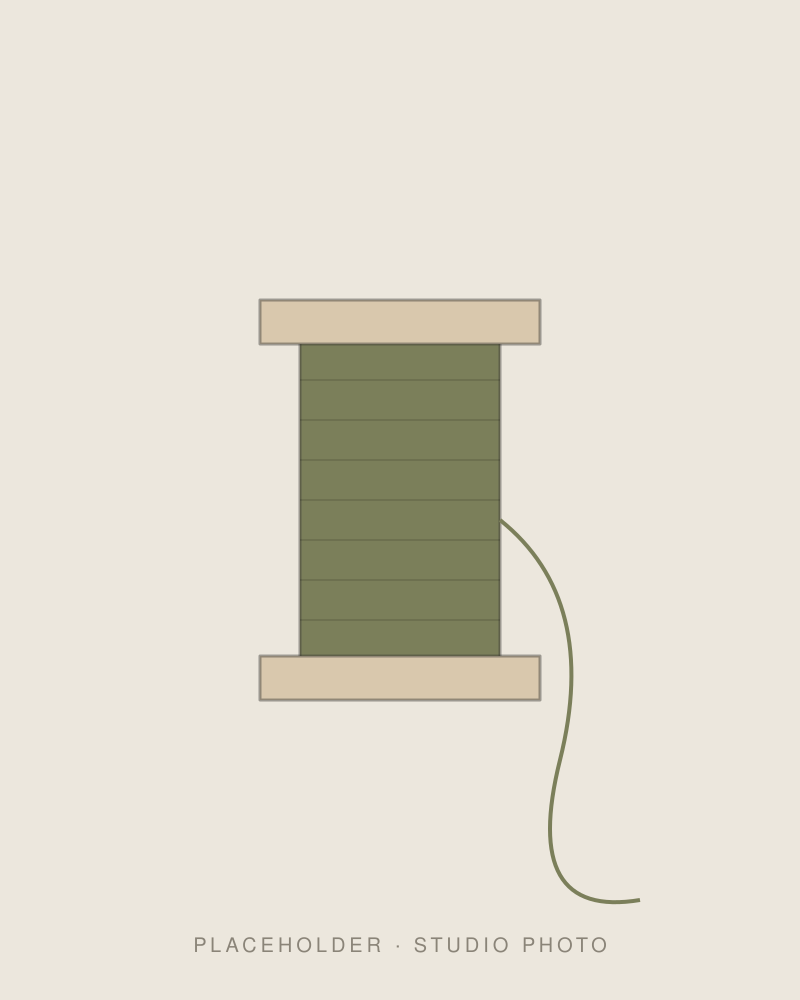

Hi, I’m Ms. Van den Boom.
I’m a home sewist who loves thoughtful clothes, good fabrics, and the process of making. This is a collection of my makes, pattern experiments, and the little lessons in between.
Makes
Nothing in this category yet — check back soon.
About

I started sewing to make clothes that actually fit, and stayed for the slow, satisfying rhythm of it.
Most of what I make is everyday clothing — trousers, simple tops, the occasional jacket — in natural fibres I want to wear for years. I like working from indie patterns, changing them until they feel like mine, and keeping notes on what worked so the next version is better.
Sewing has taught me patience, a lot about fabric, and to enjoy the in-between: the pressing, the basting, the unpicking. This archive is where I keep track of it all.
Contact
Questions about a pattern, a fabric, or a make? I’d love to hear from you.
- hello@example.com
- @your-handle
- GitHub
- your-username